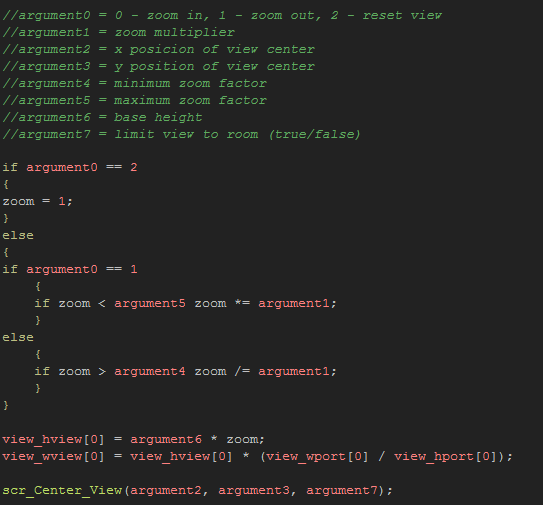

Tutorial
Page 5 of 15
Zooming The View
In the previous example you created a fullscreen window to show the whole room of your game, however a lot of times you don't want to see the whole room, but rather just a part of that room seen in a view. You
can do this too when scaling your game window, and you can also zoom the view in and out, always respecting the display size and aspect ratio.
To do in our example, open up the object obj_Windows_Fullscreen_2. This object is going to be our controller for the room, and we are going to make it so that the view zooms in when you press "1", zooms
out when you press "2" and resizes back to the base width height when you press "3". We are also going to add another action to the controller for the purposes of this demo, which is to limit the view to within
the room size when you press "4".
You may have noticed that in the previous room, when the view was scaled to fit the display, you could see the room background colour. This is not always desirable, so in this example you will be shown how to deal
with this either by limiting the view to the room borders, or by manually drawing the outside area black. Before we start programming that though, let's initialise some variables in the Create Event of our
object.
As with all the previous examples we set a base width and height, but this time it is not the room size, but rather the base size for the view into the room as we would like it to be when the game starts.
We also set variables for the zoom, creating one for the control, and two more to check against to make sure that the user doesn't zoom out or in further than we would like as well as the factor to use
(always greater than 1).
Note that the zoom will be done by multiplying or dividing the current view width and height by this factor value. You can simply add or subtract from the view width and height themselves, but if you need
to zoom out or in a great deal, this can make the zoom too slow (or fast), so by using a factor to control things you keep the zoom smooth and proportional.
The "limit" variable is what we will use to limit the view to inside the room, but in most games you will not need this as you will program this directly when creating the game. However for this example we need
it to show how the different positioning looks.
Finally we set the view itself, enabling it and setting its view port to the display size. We then make use of those scripts that we created in the previous example to set the game window to fullscreen as well as
center the view on a position based on the base width and height (which will be the upper left corner of the room, but you can set it to anywhere).
Note that the script scr_Center_View has an extra argument (false). this is because we are going to modify it to limit the view as well as center it on a position. This
requires an extra argument for the script which will be either true or false depending on whether we want to limit the view or not (don't forget to add the extra argument to the
controller object used in the previous example), so open the script now.
In the script, add the following code in after what you have already:
This rather large code block first checks to see if limiting is on (true) and if so it then does two things - first it checks to see if the current view width and height is within the bounds of the room
or not, then it checks and sets the x/y position of the room if the view goes outside the room bounds. Although the code is rather long, it should be fairly easy for you to follow, especially if you have done the
previous examples in this tutorial.
NOTE: At all times our scripts are made to be as versatile as possible, and even though our game may not need some of the functionality we are coding, we should still have it as we can then
re-use the script in multiple projects. Re-usability of scripts is something that is incredibly important and you should build up your own personal "script library" as it will greatly speed up the creation of your
games.
Now that we have the limiting code created, we need to code the actual zoom itself. This will require another script, so create one now and call it scr_Zoom_View, then add the following:

This single script will now take care of all our zooming needs, so lets add in some calls to it from the object we created. Add Keyboard Events for the digits "1", "2", "3" and "4" and add in the following lines
of code where indicated:
There are two final things to add into this object before testing. The first is to call the script scr_View_Center from the Step Event of the controller to have the view always centered on the player,
like this:
And the then we add a final piece of code to the Draw Event to "fill in" the outside borders of the room. In this case we will add a 512px wide black border, but the actual values you use in your game will depend very
much on the view and how it zooms. Note that in this example, when you zoom out, you can actually see some of the room background colour around the edges! This is deliberate so that you can see the border has
been drawn and that it is not created automatically by GM.
You can now run the game and test things out. Experiment with setting the zoom minimum and maximum sizes to something different, as well as changing the zoom factor and the room size to see how these
settings affect the final look of the game.
Click on the Next button to go to the next page of the tutorial.